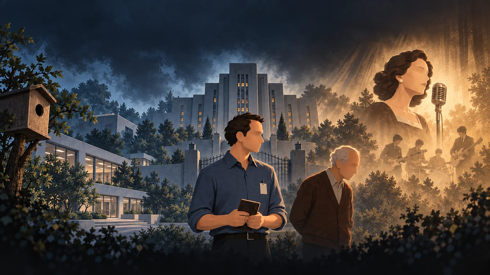
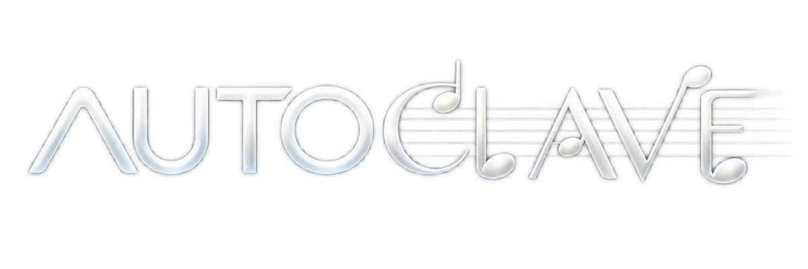
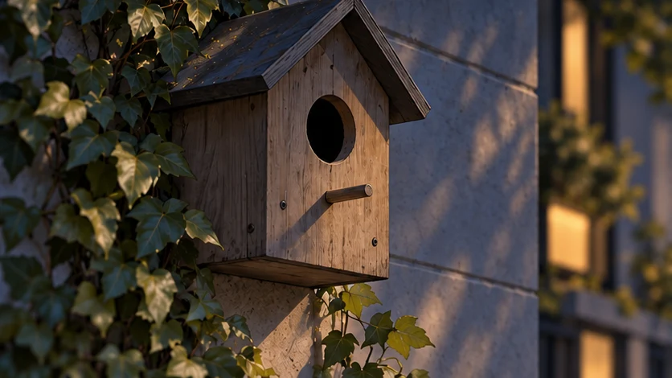
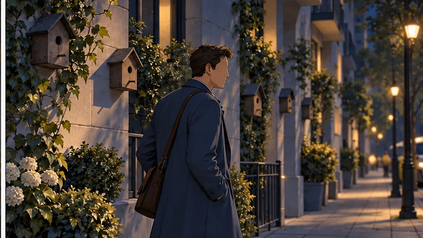
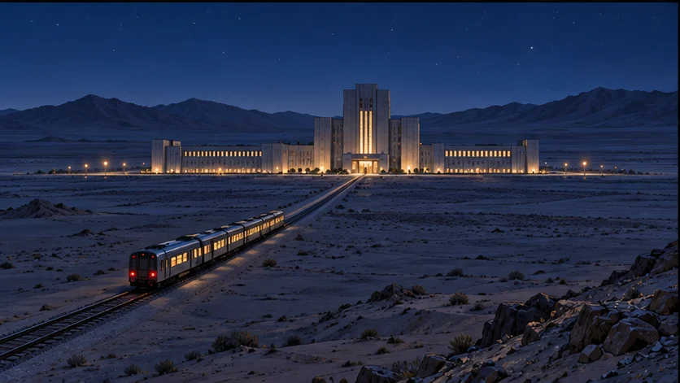
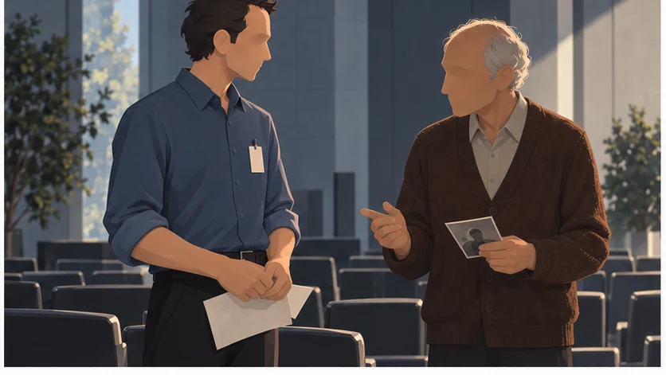
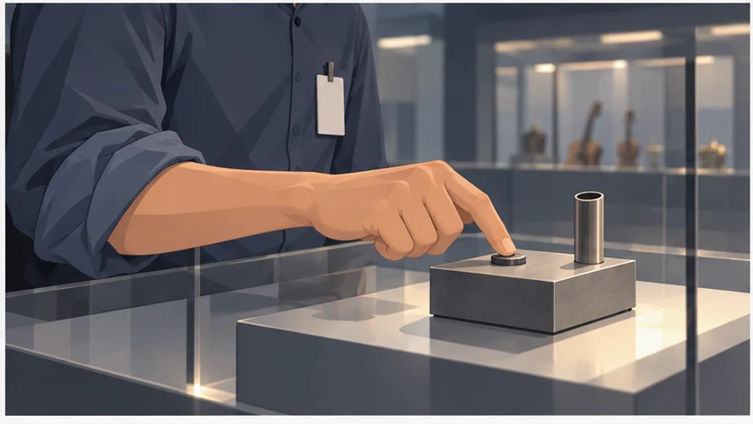
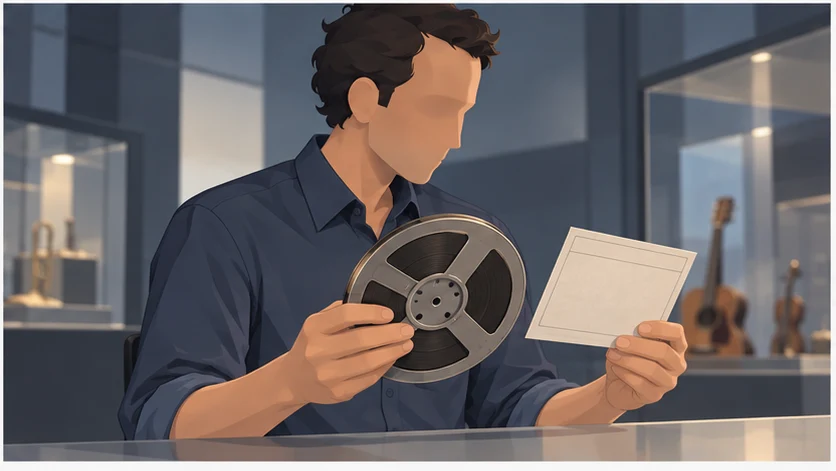
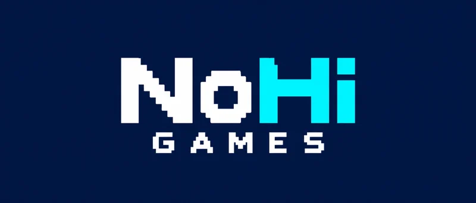

O detalhe muda tudo.
Percorra ambientes laterais, observe objetos e interaja com a infraestrutura de um mundo cuidadosamente ordenado.

NOHI GAMES APRESENTA

O que permanece
quando tudo é silenciado?
Uma vida em ordem. Uma lembrança fora do lugar.
Uma aventura narrativa sobre o que nos faz sentir.
A ESTABILIDADE TEM UM PREÇO
Tomás é um funcionário comum em uma sociedade que trocou a intensidade emocional pela estabilidade.
Entre procedimentos e tarefas de rotina, vestígios de memória, arte e música começam a ganhar outro sentido. Observe o que ficou para trás. Escute o que ainda resiste. Até onde a curiosidade pode levar você?
UM OLHAR FORA DA ROTINA
O mundo de Tomás também se conta nos detalhes. No que ele encontra. No que começa a observar.
RECORTES DA HQ / PRÓLOGO


Todos os dias,
o mesmo caminho.
Até que algo muda.
Percorra ambientes laterais, observe objetos e interaja com a infraestrutura de um mundo cuidadosamente ordenado.
Memória e música se tornam ações: reconhecer uma sequência, ajustar um sinal, experimentar uma possibilidade.
Trechos isométricos e momentos de tensão mudam a leitura do espaço. Tomás precisa de atenção, não de poderes extraordinários.
GRAVADO NO JOGO
Do caminho de trem aos corredores da instituição.
Dois trechos reais da versão em desenvolvimento.
Selecione reproduzir para carregar cada vídeo. Trechos de uma versão em desenvolvimento; a apresentação pode mudar.
UM MUNDO CONTADO EM QUADROS
Conversar. Observar. Tocar.
A curiosidade começa perto.



Recortes de HQs do projeto. Uma aproximação ao universo narrativo, sem revelar o desfecho.
Artes de ambientes e recortes das HQs do projeto.
Selecione uma imagem para explorar.
Imagens de desenvolvimento. As artes acima não são capturas do gameplay atual.
Três experiências adaptadas das regras do projeto.
Jogue aqui, no seu ritmo. Sem instalar.
INÉRCIA / PRECISÃO
Recolha três sinais. Use impulsos curtos e atraque devagar.
ESCUTA / MEMÓRIA
Observe e repita uma frase de três, quatro e cinco notas.
FREQUÊNCIA / EQUILÍBRIO
Encontre a sintonia entre duas ondas. Sustente o encontro.
Som opcional, desligado ao abrir. Teclado, mouse ou toque. Estas são adaptações web, não uma demonstração completa de Autoclave.
Autoclave é um jogo indie narrativo da NoHi Games.
